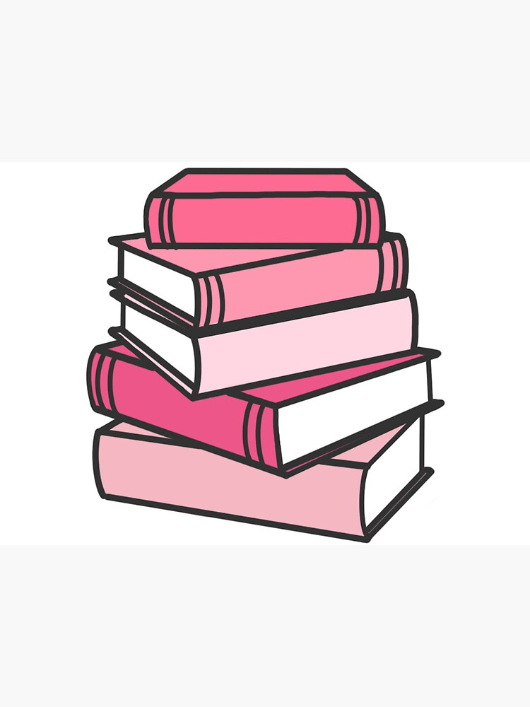

How much do I read?
The most books I've read in one year is about 60 books. Now that I am in college, I find myself reading less recreationally
because of my workload but it still something I enjoy as a past time.
What do I like about reading?
Reading gives me an opportunity to enjoy some quiet time, either to learn something new or to escape to an imaginary world. I think
reading is valuable because it has the potential to expand one's creative mind and it is also proven to improve writing skills.
Some of my favorite books
Where the Crawdads Sing by Delia Owens
Pride and Prejudice by Jane Austen
Scythe by Neal Shusterman
A Court of Thorns and Roses by Sarah J. Maas.
